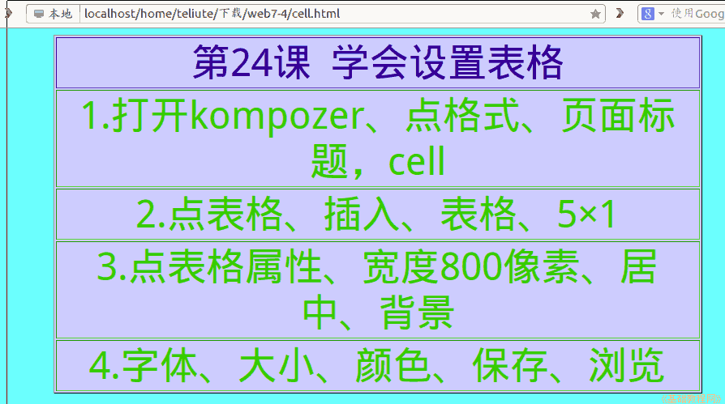

2011-2012 第二学期七年级文字处理和网页教学设计
作者：TeliuTe 来源：基础教程网
二十四、学会设置表格属性 返回目录 下一课
（一）教学设计
1、学习目标：学会设置表格属性
2、注意事项：菜单使用的比较多。
3、教学过程：
1）教师准备学案和板书；
2）学生整队进入，开机抄黑板上笔记；
3）教师讲解板书演示操作；
4）学生打指法、日志、完成操作；
5）教师打勾记录学生指法成绩，检查日志和操作；
注：学生抄完笔记就开始打指法、日志，老师讲完后再继续完成；
（二）板书设计(学生笔记)
第24课 学会设置表格属性
1、打开kompozer，点格式、页面标题、保存 cell
2、点 表格 、插入、表格，5×1
3、点 表格 属性、宽度800像素，居中 背景
4、字体大小 颜色 保存浏览
操作图示：

（三）课后记
中午看电视剧《东方朔》，没睡午觉下午瞌睡的
午读时间先趴桌上睡了一会，学生来了才猛然醒来
--
精神恢复好了，开始下午的四节课
严格要求先整好队再进，收收心养成好习惯
--
内容没太多难点，前两条复习上节内容
后一条是本节，然后是综合性一条
--
设置漂亮的表格还需要美术的眼光
也只是把操作技术讲会，具体配色没法自己也不好
--
把5×1那儿留着自己绕弯，文件不能重名提一下
然后设置区域语言用双击也可以，双击还是个薄弱的难点
--
日志开始不让加密码了，其实早先就可以的
只是前面一直用惯了，保持养成习惯就好
--
内容上两条，可以写这节课的收获
也可以写本学期的，把七年级学习生活总结一下
--
把校园网内容充实一下，一届一届边着往下传
这样以后的学生可以在校园网中找到范例
--
有几个太慢的让写责任两条，有一个得一步一步讲
估计是对自己没信心，其他学科可想而知
--
这样的学生在学习上越落越远，最后会怎样
能拉一阵是一阵，实在拉不住了也没办法
--
返回目录 下一课
本教程由86团学校TeliuTe制作|著作权所有
基础教程网：http://teliute.org/
美丽的校园……
转载和引用本站内容，请保留版权信息和本站链接。